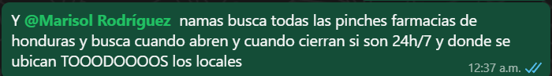
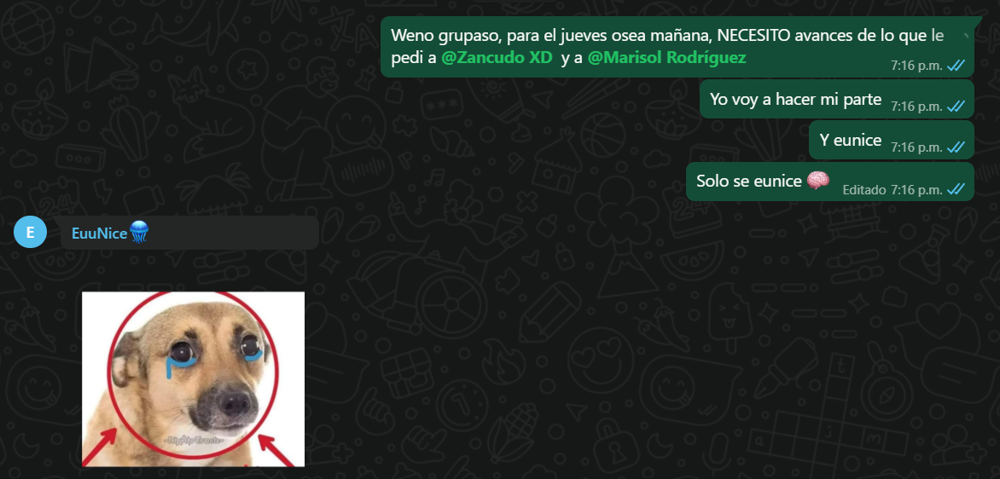

FarmaTech 
Semana 1: Gabriel desarrolló la estructura base del proyecto, enfocándose en el diseño e implementación del formulario de inicio de sesión (login) y el sistema de registro de usuarios. Se definió el estilo visual general utilizando HTML y CSS, estableciendo los primeros archivos de diseño para unificar la apariencia del sitio.
Semana 2: Gabriel dejo unos trabajos para todas las integrantes, Suyapa Gabriel corrigió errores presentados en el trabajo de los integrantes Génesis y Suyapa, asegurando la funcionalidad adecuada de sus módulos. Luego les di una fecha limite para mandarme avanzes pero nadie cumplio entonces me puse algo frustrado. pero bueno, Genesis creó dos nuevas páginas: una sección de créditos y una bitácora de trabajo. Se mejoraron los diseños visuales tanto del login como del formulario de registro, y se realizaron ajustes significativos en la página de inicio. Según la indicación docente, se actualizó la estructura para que la página de inicio pasara a ser el nuevo archivo index.html, asegurando una navegación más intuitiva y profesional.
Semana 1: Eunice no logró avanzar con las tareas que le fueron asignadas por Gabriel; sin embargo, desde el inicio del proyecto mostró interés y aportó ideas generales relacionadas con la estructura del sitio y las secciones necesarias.
Semana 2: Eunice asumió un rol más activo, desarrollando la página de soporte del proyecto. Además, propuso nuevas ideas que ayudaron a complementar el diseño y funcionalidad de dicha sección.
Semana 1: Génesis desarrolló un buscador básico, cumpliendo con lo solicitado por Gabriel. Aunque su implementación fue sencilla y con pocas funcionalidades, logró entregar un primer avance funcional que sirvió como base.
Semana 2: Se le asignó una tarea fundamental: la creación del comparador de precios y disponibilidad por sucursal. Génesis completó el trabajo dividiéndolo en dos partes; sin embargo, se identificaron áreas por mejorar, como la incorporación de mayor contenido y un diseño más completo. A pesar de ello, cumplió con la estructura básica y funcionalidad requerida.
Semana 1: A Suyapa se le asignó la tarea de desarrollar un buscador similar al solicitado a otros integrantes. Sin embargo, optó por crear una página web independiente con temática de farmacia. Aunque su propuesta fue sencilla y no se alineó completamente con el objetivo inicial, representó un esfuerzo individual por aportar al proyecto.
Semana 2: Se le encomendó realizar la sección de horarios y ubicaciones de farmacias. Durante gran parte de la semana estuvo ocupada y no mantuvo comunicación activa con el equipo. Aun así, al final entregó el trabajo, el cual presentaba varios errores técnicos que Gabriel tuvo que corregir. Aunque la solución final fue simple, logró cumplir con los aspectos básicos requeridos.